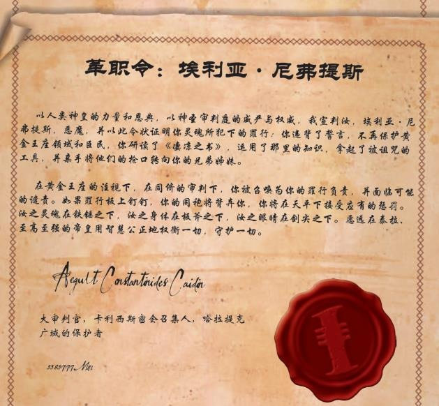

黑暗异端禁忌年表
作者：阿兰·布莱（Alan Bligh）（R.I.P）
译者：石盾人
《黑暗异端：禁忌年表》是专为《黑暗异端角色扮演游戏》创作的一系列不定型文章和可选
游戏规则。这些文章包含了丰富多彩的内容，涵盖规则补充、新型角色以及构建侍僧小组的
不同方式，同时还提供了运行特定类型游戏的创意思路。但需要警惕——选择使用其中某些
内容可能会对你的黑暗异端游戏产生深远影响。这些内容可能会有所变动，并且在某种程度
上偏离了黑暗异端核心规则的纯粹性。对于那些已经坚定决心，渴望窥探禁忌知识的人，阅
读需自行承担风险，尽情享受吧！
——黑暗异端知识地牢的管理者们。
请注意，这个时间表并不是完整或详尽无遗的，只是对卡利西斯星区历史的一个快速展示，正如可能被审判庭侍僧所知晓的那样。许多事件的真实本质，以及一些具有深远影响的整体事件仍然被隐藏着。在广泛的帝国历史中，也包含了一些主要事件，以帮助构建上下文。
-.M30-M31
大远征
EARLY M31
荷鲁斯叛乱
100-600.M36
叛教纪元
228.M36
刺客战争
378.M36
范迪尔之死及其血腥统治的垮台
395.M36
哈洛克权证：为感谢自由船长摩德凯·哈洛克（Mordercai Haarlock）在对抗范迪尔教廷舰队中所作出的卓越贡献，圣人塞巴斯蒂安·索尔授予他了哈洛克行商大权证。
723-736.M36
伟大航行：知名行商浪人所罗门·哈洛克（Solomon Haarlock）的舰队在一次为期 13 年的危险航行后绘制出了一片帝国边境外的区域，他将其命名为“卡利克斯扩张区（Calyx Expanse）”（或译为圣杯扩区）。在这里，哈洛克发现了几个异形领域、大量的矿产资源、几条稳定的亚空间航道以及散布着人类聚居区的未知世界。除此之外，他还特地标注出了几个世界，并认为这是一个已死亡许久，年龄长达数千年庞大帝国的领土，并将这些领地命名为“伟大、古老且邪恶的圣杯”。他在《普遍星图（Cartographia Universalis）》中记录了该地区，因其富含“灵魂、赃物、财富和最好不要打扰的东西”，哈洛克在书中认为，帝国可以将其纳入
统治，而代价则是“大量喷涌的鲜血
133.M37
锡诺菲亚（Sinophia）的创建：行商浪人特蕾莎·锡诺斯（Teresa Sinos）在她漫长的航行结束时被授予了这片星球作为其个人封地。该星球位于斯卡鲁斯星区边缘之外，迅速演变为涉足卡利克斯扩区和光晕星的探险家们的重要中转站。
Various-M37-M39
掳掠纪元：从卡利克斯扩区带回的关于财富、异形文物和适宜居住的世界的故事吸引了众多
来自斯卡鲁斯（Scarus）和伊克萨尼德（Ixaniad）星区的自由船长、行商浪人和叛徒。更黑暗的传说也随之浮出水面，有非人类帝国、可怕的异形“食心者（Mind Eaters）”、曾经是人类的亚空间崇拜野蛮人、无尽的“哈’阿兹’罗斯深渊（Abyss of Ha’az’Roth）”的黑暗危险，以及预示灾难的邪恶黑色恒星。但足够多的可掠夺物的流动，使冒险家、流浪者、机械教开拓者们在接下来的两千年内不断涌入这片广阔的土地，许多人再也没有回来。
290-299.M38
阿尔迪德远征（THE ALTID CRUSADE）
Mid. M38
梅拉蒂斯（Meratis）聚落：在伊克萨尼德星区的王朝战争中受迫害的孤立虚空家族逃离深渊，在星际死区的梅拉蒂斯星团（Meratis Cluster）找到了新的家园。随着时间的推移，他们的人数不断增加，团队中也加入了人类叛徒、亡命之徒等，形成了梅拉泰科氏族（Meratech
Clans）。
038.M39
净化伊姆加尔卫星的基因窃取者（THE MOONS OF YMGRL CLEANSED OF GENESTEALERS）
322.M39
安茹远征（Angevin Crusade）发动：来自泰拉宫廷的强大贵族普雷托·戈尔根纳·安茹（Preator Golgenna Angevin）被提升为至高将军（或译为大元帅），并获得了泰拉高领主的授权，发动一场解放和统治卡利克斯扩张区的远征，史称“安茹远征”。他的远征部队主要来自太阳星域，人数超过 1700 万，分为四个战斗群和一个战略预备队，远征军的增援部队不光包括了“钢铁蜘蛛”（ Legios Venator）和“燃烧骷髅”（ Legios Magna）两支泰坦军团，还有由黑色圣堂（Black Templars）、银虎（Tigers Argent）、美杜莎之子（Sons of Medusa）以及墓穴守卫（Charnel Guard）战团组成的阿斯塔特部队，更有来自太阳星域和朦胧星域舰队的重要海军部署支援。而许多行商浪人和机械教开拓者舰队走在主力部队前面，确定目标并在这个危险的太空区域提供积极的侦察。使这支规模庞大的部队体量更大的是成千上万的
“贫民战士” ，亦被称为“教会民兵”，他们被国教教会和远征军舰队的通过激发起了内心中的神圣狂热，再加上无数的小人物、机会主义者和后勤运输工具的参与，供应线从前沿延伸到整个星区。远征军以边境世界锡诺菲亚作为前沿阵地和标志，主攻势力像铁拳一样冲入卡利克斯扩张区的核心，在外围区域（Periphery）双管齐下，朝着马尔菲（Malfi）和所罗门（Solomon）这两个关键星系进发，而行商浪人们则已经提前与这里亲帝国的人类建立了长
期联系。
341-545.M39
帝皇的狂暴收割：两个世界迅速被攻占，为远征军提供了滩头阵地。三个较小的异形帝国从
这些锚点上被击败。鉴于远征的成功以及征服区财富的流动，泰拉高领主议会授权了帝国部
队对远征的进一步增援。抓住时机，远征军发动了迄今为止最大规模的全面攻势，从突出部
发动双管齐下的进攻，在短短四年内征服的世界数量与之前二十年所征服的世界数量一样
多，形成了后来被称为“戈尔根纳边际”的领土，编年史家将这一次事件称为“帝皇的狂暴
收割”。 这场战役取得的众多胜利中，最受盛誉的莫过于年轻的德鲁苏斯将军，他仅在一个
星期内就占领战争世界艾坎索斯（Iocanthos），推翻当地的恶毒暴政。而最臭名昭著的战果是阿蒙·安·莫鲁斯（Amun'an Morrus），这颗星球上的人机族群被认为受到技术异端的污染没有资格生存下去，整颗星球被灭绝令摧毁，星球位置也被从帝国记录中抹去，成为后来卡利
西斯星区中一个黑暗的传说。
353-558.M39
戈尔根纳修整：在经过三十年的远征后，第一和第二阶段的远征目标已经完成，疲敝的远征
军需要开始休养生息。安茹大元帅开始巩固对现有 200 多颗被占领世界的控制，并引导第一波帝国殖民潮来到占领区。在这段和平的时期，星界军的几支著名军队（如勃朗特百夫长Brontine Centurions，即勃朗特长刀手的前身）通过自己的赫赫战功换得了在这些世界上的定居权。同时包括阿斯塔特修会在内的一些附属部队，则开始接连退出远征军。
359.M39
远征开拓第二战场：安茹远征第三次推进开始，一支新的集团军从朦胧星域集结起来，在高
阶海军上将瓦肯（Vaakkon）的带领下朝卡利克斯扩张区开辟第二战线，目标是与从戈尔根纳出发的安茹远征军主力汇合。这一阶段的战役被证明是灾难性的，因为不断恶化的亚空间环境以及一系列的灾难和逆转困扰着这场冲突，当双方舰队最终于 363.M39 年在奥伦达尔会师时，短短四年的损失抵得上远征军最初二十年的战损。安茹大元帅命令将奥伦达尔（Orendal）改建成圣殿世界，以纪念战争中的烈士，之后便下令撤退了。有人认为因为第三次推进的失利，导致安茹的意识和精神陷入崩溃，在大军退回到戈尔根纳边际内部后，安茹就将指挥权全部交付给麾下的高级将领和海军上将。但结果好坏参半，由于缺乏明确的权利区分，派系斗争和内耗开始在远征军内部涌现。
363-369.M39
萧瑟年代: 随着远征军的前进步伐停滞不前，帝国领地开始不断受到来自外部的持续攻击，经受着绿皮兽人、异形海盗和袭击者的突击和蹂躏，这些攻击夺去了数百万人的生命。预示着灾难的征兆和迹象无处不在：繁荣的洛萨主星（Lossal Prime）在失联前几日，天空中开始燃烧黑色的火焰；在哈’阿兹’罗斯（Ha'az'Roth）航行的哨位舰船，发现了整支迟迟未到的阿库里安战斗群（Akurion）残骸；瘟疫则肆虐在马尔菲的要塞。叛乱和邪教活动的兴起威胁着本以为稳定的世界，刺客们夺走了远征军的精神领袖，大忏悔者梅尔歇尔·艾尔（Melcher El）的性命。将军们和帝国指挥官之间的争斗日益加剧，小冲突、背叛和彻底的不信任使事态进一步恶化。自开战以来第一次，远征军的战果开始流失，帝国军队分散开来保卫他们剩余的领土，而他们的实力也在保卫新领地的过程中日益捉襟见肘，士气低落，军中不和日益加剧。只有行商浪人西贝林·哈洛克（Sibylline Haarlock）和路德·萨布里哈根（Ludd Sabrehagen）的舰队提供了快速运输和部队重新部署，使得德鲁苏斯将军对崇拜亚空间的尤’瓦斯（Yu’vath）异形和他们堕落的人类盟友进行出色而大胆的反击，从而避免了整个马尔菲地区的崩溃，并使远征军的征服大有可为。德鲁苏斯被广泛赞誉为救世主，但许多权势人物却将他视为危险的战争贩子和潜在的篡位者。
367.M39
德鲁苏斯显圣：根据一些消息来源，安茹元帅地位的竞争者代理人出卖了德鲁苏斯，当他在
玛卡贝斯五号（Maccabeus Quintus）集结残兵之时遭到了刺客的致命袭击，德鲁苏斯看似被杀死，却又立刻奇迹般地复活：许多人把这认为是一个真正的奇迹，是帝皇恩宠的明显标志。德鲁苏斯崇拜很快开始在他的阴影下蓬勃发展，国教也逐渐将他尊崇为活圣人，而也有说法表明，暗中的机构，据说是审判庭的圣锤修会，也为德鲁苏斯的部队打击尤瓦斯人及其盟友（包括帝国内部的叛徒）提供了新的帮助。在更广泛的帝国势力默许支持下（包括钢铁之手阿斯塔特战团的一支大规模部队也有参与），德鲁苏斯几乎是仅凭自己的人格力，便独立地将远征军的大部分力量凝聚到自己的旗帜下。德鲁苏斯的实力随后得到了增强，他率领安茹远征军开启了远征的第三阶段，也是最后一个伟大的征服阶段，摧毁了控制着后来为纪念他而被命名为“德鲁苏斯边际”的大部分地区的势力，并毁灭了许多已占据的世界。
370-610.M39
大建设时期：大批殖民者从遥远的太阳星域中人口过剩的世界，以及近处动荡不安的曼陀罗
星区和格赫纳（Gehenna）星区涌入新生的卡利西斯星区。
372.M39
安茹之死：名义上的大元帅戈尔根纳·安茹在自己位于夸迪斯（Quaddis）的宫殿内离世，尽管帝国官方的说法是自然死亡，但传闻表明他的健康状况因高龄和纵欲生活的双重重压下恶化，暗地里也有刺客庭介入的说法，作为对他远征失败的惩罚。在一片赞誉声中，德鲁苏斯接下了安茹的大元帅军衔，并得到来着审判庭和军务部的广泛支持。在安茹的哀悼期一结束，他便立刻重整军势朝着阿德兰蒂斯星云（Adrantis Nebula）和尤·瓦斯地狱世界上的余下要塞展开最后的攻势。
380.M39
车床（或译拉斯）世界的赠与：为了表彰机械神教在肃清阿德兰提污染的过程中提供的宝贵
协助和惨重损失，并考虑到他们在过去数十年为远征军做出的贡献，德鲁苏斯将车床星系
（Lathe System）永久授予机械教，使其成为万机神的专属领地，同时还批准了他们对另外几个已征服世界的要求，以及在已征服的各星球间自由通行的权力。由此德鲁苏斯将火星，
与自己的新生星区绑定在了一起。
384.M39
卡利西斯星区的新生正式宣告安茹远征的结束：随着尤·瓦斯和贝尔·查尔德（Bale Childer）异形被彻底击败、母星被执行灭绝令，德鲁苏斯正式被高领主的首席侍从官（Equerry Primaris）授予了全权，成为卡利西斯星区广受赞誉的第一位总督，并宣布安茹远征正式结束。上任后，德鲁苏斯将星区首都定在辛提拉（Scintilla），批准伟大的贸易宪章给商业船长和维持远征的新兴商业力量，这种新生的贸易血脉经过多年的结合后，诞生出未来在卡利西斯星区最伟大的宪章船长家族和最权倾朝野的贵族家族。其他的成就还包括签署了星区伟大的法律法规，《卡利西斯委员会条例》，并在辛提拉设立了卡利西斯国教神圣议会。然而，在接下来的三个世纪里，对该星区的全面有效平定将消耗帝国战争机器的大量血液和材料。
417.M39
德鲁苏斯之死：第一任最伟大的星区总督寿终正寝，星区总督由他的前副官和已故的安茹远
亲克林·舒尔图斯（Corin Shultus）元帅继任。德鲁苏斯遗体的最后安息地点一直是个秘密，尽管有传言称他被带回了玛卡贝斯五号，并被安葬在他第一次“死亡”的地方。他去世的消息伴随着大规模的哀悼和动荡，整个星区经历了七年的哀悼周期。
502.M39
德鲁苏斯封圣：经过将近一个世纪的审议，神圣泰拉总教会（General Synod of Holy Terra）确认了德鲁苏斯的圣人身份，其崇拜和教义已经在卡利西斯星区内盛行，德鲁苏斯派成为当
地国教教义的主导因素。
550-760.M39
傲慢之战：独立的锡诺菲亚与卡利西斯星区不断崛起的商业势力展开了一场秘密的贸易战，最终遭受沉重打击。接下来的几年里，大部分居民被遣送回星区，锡诺菲亚的繁华城市一片空寂。如今的锡诺菲亚只是往日余晖的残影，名义上屈服于卡利西斯星区之主的统治，并注
定将长时间经历缓慢的经济衰退。
989.M39
多尼奥远征（THE DONIONIAN CRUSADE）
123.M40
三重诅咒：在哈泽洛斯（Hazeroth）深渊外围，两个防御严密的卡利西斯战舰监控站和一支庞大的主力舰队，在一年内被未知袭击者摧毁，迫使帝国海军进行整顿，明显缩小了卡利西斯星区的边境，并终止了帝国在该地区的进一步军事扩张。唯一的线索是在 17 号哨所的残骸上发现的，刻着“行走的蠕虫找上了我们所有人”的字样。
387-401.M40
马卡里乌斯远征
552-570.M40
白色哀伤（The White Sorrows）：一群艾达灵族海盗，后来被称为白色哀伤阴谋团，通过一系列毁灭性的突袭，困扰着被称为“外围区域（Periphery）”的空域。卡利西斯战斗舰队、机械教开拓者以及行商浪人们在赞斯派审判官兼行商浪人科布拉斯·阿奎雷（KobrasAquairre）的指挥下（传闻中得到了未知异形势力的协助）联手与这些灵族海盗作战，最终将其击败，威胁得以结束。战局的关键时刻，阿奎雷的旗舰“塞斯之子（Son of Seth）”号成功撞击并跳帮了灵族旗舰“折磨祭坛（Altar of Torment）”号，科布拉斯亲自在单挑中击毙了敌方的屠夫执政官（Butcher Archon）。
709.M40
塔尼丝（Tanis，不是冈特的幽灵的 Tanith）陷落：昔日繁荣的塔尼丝巢都世界及其周边星系曾是卡利西斯星区在哈泽洛斯区域的坚固防线，但塔尼丝却陷入了一场无法解释的现象，一颗预示着毁灭、疯狂和死亡的邪恶黑色“暴君之星（Tyrant Star）”降临了塔尼丝。数周之内，塔尼丝星系遭受蹂躏，导致超过二十亿人死亡或失踪。唯一的幸存者在圣阿斯特丽德之陨（St. Astrid’s Fall）的农业卫星上被找到，而这颗卫星本身也遭受了严重的摧残。整个“塔尼丝事件”在完全由审判庭掌控的情况下被掩盖，并因涉及死刑的话题而被宣布为禁忌。文献数据也被相应调整，以使塔尼丝从未出现在公共记录中。这一事件，连同一系列其他黑暗的奥秘和越来越多的致命预言，导致了当前形式的“暴君阴谋团（暴君星智谋团），TyrantineCabal”的形成，以调查此事并采取任何必要的行动，对抗现在已被分类为“黑暗异端”的
现象。
738.M40
第 26 次星际战士建军
738-741.M40
黄铜之战（The War of Brass）：吉尔米罗星团（Gelmiro Cluster）的巢都世界陷落于叛乱之中，一个自称为“黄铜帝皇（Emperor of Brass）”的领袖的领导下，人们沦为毁灭之力的崇拜者。高度军事化的叛军迅速支持并武装了附近世界的叛乱组织，当遭到反击时，他们队伍中显露出来自恐惧之眼的黑暗势力的影响。随后发生的所谓“黄铜之战”相对较短暂但血腥，涉及该星区各地的力量，还有阿斯塔特修会和钢铁蜘蛛（Legio Venator）的泰坦，使吉尔米罗曾经繁荣的世界变成了一片炸裂、布满碎石的废墟。从那时起，这些星球就被列为了战争世界，成为了充满致命的变种人拾荒者、叛军和破坏者的地方，尽管黄铜帝皇的统治早已结束，但这个星系直到今天仍然是一片被世人回避的无主之地。
740-745.M40
第二次沃蒂根（VORTIGERN）远征
098.M40
殖民玛拉（Mara）：在哈泽洛斯深渊中，古老而冰冷的玛拉世界开始被人类殖民，矿工们深
入这个世界冰冷的深处，寻找稀有且独特的微量元素。
103.M41
“意外”创
阿提亚（Ateanism）主义开端：大异端朱利厄斯·阿提亚诺斯（Julius Ateanos）作了《厄里斯变换》一书，这一异端邪说将在接下来的岁月中夺取千千万万的灵魂和生命。
126.M41
《黑暗异端之预言（The Propheticum Hereticus Tenebrae）》是暴
黑暗异端（Dark Heresy）：
君阴谋团精心编纂的巨作，它集结了众多来源、案例研究和预言，形成了一部记载黑暗知识
的统一档案，被珍藏于毒蛇堡（Bastion Serpentis）的深处（尽管有传言称这其实只是某个早期版本的作品，来源神秘莫测）。其中的记载让很多伟大的思想家夜不能寐。
143-160.M41
哥特战争
191.M41
玛拉孤立：在这片受到亚空间干扰的区域内，与玛拉殖民地的所有联系都中断了。后续的调
查发现，先前的居民已经消失得无影无踪。
211-226.M41
梅里泰科之战：梅拉蒂斯星团（Merades Cluster）的氏族背叛了帝国，吸引了众多叛乱派系深入星区进行掠夺，引发了广泛的混乱和无政府状态。在叛乱的巅峰时期，这场战争对星区的稳定构成了几代人以来最大的威胁，甚至威胁到险些与邻近的伊克萨尼德星区发生内战。在米拉姆·哈瓦拉（Myram Harvala）崛起成为星区总督的影响下，梅里泰科氏族被彻底粉碎，并清除了星团中世界中的所有生命。战后，证实了技术异端组织逻辑学者（Logicians）
策划这场战争的事实。
385.M41
十七殉道圣徒：一支规模不大的修女会部队，为了保卫马尔菲星系的加洛格拉斯（Gallowglass）农业殖民地免受一股腐化邪教的侵害而英勇献身，顺便在过程中击败了一位极为强大的恶魔化身。为了永远铭记她们的英勇事迹，人们在那里竖立了一座永恒的神龛。
389.M41
暴君星降临：德鲁苏斯边际的阿斯特罗斯矿业殖民地（Asteroth Mining Colony）在异端叛乱和暴君星的降临下遭受了毁灭性打击，引发了大规模的自杀浪潮。殖民地被彻底摧毁，幸存者逃往附近的洛库拉（Locura）星系，直到审判官和法务部联手“清理”掉这些难民潮之前，
他们已在此地播下了混乱和不安的种子。
410-412.M41
第一次瓦克萨尼德（Vaxanide）围攻：瓦克萨尼德星系遭到绿皮兽人掠袭舰队的包围，兽人部队还进行了星球空降，试图袭击其巢都城市，但很快遭到迅猛反击。最终，卡利西斯战斗舰队将兽人赶走，其中一支庞大的分裂部队降落在大甘夫（Ganf Magna）世界。
428-430.M41
泰勒利安联合（Tellurian Combine）的覆灭：泰勒利安联合这个主导性商业势力最终被发现实际上是邪恶邪教“黑暗之角兄弟会（Brotherhood of the Horned Darkness）”的掩护。由于该组织在各个阶层的广泛权势和深入渗透，其甚至渗透到了卡利西斯的权力巅峰清宫，为了避免公开内战和彻底清洗，审判庭卡利西斯密会对该兄弟会发动了为期三年的地下战争，直至结束，这场战争牵涉到该星区历史上据信是最大规模的刺客庭和灰骑士行动。广泛的秘密清洗及其产生的强烈怀疑浪潮，意外导致了卡利西斯星区中央政府显著且长期的削
弱，对未来几个世纪都产生了不利影响。
428-479.M41
马尔菲恐怖统治时期：科巴家族（House of Koba）在马尔菲崛起为卡利西斯密会历史上最为暴虐和残酷的政权，继而引发了继任问题和卡利西斯星区内战的危机，威胁着以隐蔽和血腥的手段从当时权势弱小的辛提拉清宫夺取星区统治政府的席位。科巴家族最终因内部背叛而自取灭亡，留下了一大片权力真空，引发了马尔菲为期二十年的冲突、混乱和小规模家族战争时期，直到一场更大的威胁从混乱中崛起。
444.M41
第一次阿米吉顿战争
499.M41
马尔菲的血腥至日：“海特朝圣者（Pilgrims of Hayte）”邪教的可怕崛起迫使马尔菲结束了内部分裂，然而这是以这个强大世界险些毁灭为代价的。尽管“海特朝圣者”在战斗中被击
败，但并未彻底湮灭，一直存续至今，成为审判庭卡利西斯密会的眼中钉，制造了许多令人
悲痛的暴行。
503.M41
暴君星降临：斯诺登世界（Snowden’s World）遭遇了暴君之星的袭击，引发了长达二十天
的骚乱和大规模饥荒，人口急剧减少。
507.M41
第二次瓦克萨尼德围攻：以战斗岩石“野蛮之巅（Pinnacle of Savagery）”为核心的第二波兽人入侵部队袭击了该星系。尽管规模大大超过第一波，但它迅速遭受了卡利西斯战斗舰队和人类联军力量的迎击。通过大规模轰炸，成功使野蛮之巅的残骸解体，未能接近城市世界。尽管如此，一些兽人力量仍然成功渗透，引发了激烈的战斗。
560.M41
德维恩公司（Devayne Incorporation）兴起：由于德维恩协会（Devayne Fraternity）在世俗事务中的活动和日益加重的道德腐败，卡利西斯国教会议撤销了其神圣授权，迫使其缓慢演变为德维恩公司，成为该地区最强大且组织严密的商业力量之一。
609.M41
清宫的复兴：被尊称为“伟大调解者”的星区总督拉哈努斯·苏尔特（Larhanus Sult）执政上台后，成功地恢复了清宫的众多权力和威望。他巧妙地将行政权力重新集中到星区总督的执政办公室，这些权力多年来曾逐渐流失给了诸大贵族家族。与此同时，他大幅扩充了直接受其办公室控制的军事力量，并对席贝柳斯巢都的治理进行了积极的改革。
623.M41
“狭缝悬崖”（Fall Narrow，或译狭落）哨站入侵：在 88 坦斯塔（88 Tanstar）上，狭缝悬崖采矿前哨站的真相浮出水面，原来它秘密受到异形密怪（Cryptos，克瑞普托斯）的支配。
689.M41
科林斯远征（CORINTH CRUSADE）
703.M41
哈洛克失踪：伊拉斯谟斯·哈洛克（Erasmus Haarlock），原被认为是家族的最后一人，在完成对其嗜血亲属的歼灭后，作为家族唯一的幸存者神秘失踪。
724.M41
萨特斯岩（Sutters Rock）疫情：采矿小行星殖民地萨特斯岩成为首个确认出现后来被称为费代菌株病毒（Fydae Strain Virus）的地方。瘟疫蔓延，亡者行走，导致短短几小时内 12 万殖民者全部丧生。该病毒源于险恶的恶魔邪教“邪恶学者”有关的亚空间传染源。
731.M41
马里乌斯·哈克斯（Marius Hax）的崛起：铁腕的马里乌斯·哈克斯成为卡利西斯星区的领主，实际上他在过去几十年里一直是其年迈且身体疲惫的亲戚拉哈努斯·苏尔特的幕后掌权者。他精明、狡猾而又无情，能够在其前任成就的基础上取得更大成功，被认为是该星区数
个世纪以来最为杰出的统治者。
740.M41
马琴科（Machenko）大清洗：对商业巨头马琴科王朝的大规模清洗揭示了其中相当一部分人的腐化行为，受到了审判庭的制裁，使其沦为昔日强大影响的残影，同时还遭受了敌对家族的进一步打击和折磨。然而，马琴科家族坚持了下来，并在接下来的几十年里慢慢重建他
们的力量。
742.M41
达摩克里斯湾远征
742.M41

揭示规律：暴君阴谋团最终解开了“卡利西斯类型凶案（Calixian Pattern Killings）”的谜团，为了揭露这一模式已经研究了至少一千一百年。
742.M41
暴君星降临：机械教开拓者飞船在死亡世界守夜星（Vigil）附近的区域目击到了这颗神秘的
暴君星。
742-770.M41
玛琉格利斯技术异端：好战的开拓者大贤者昂波拉·玛琉格利斯（Umbra Malygris）与车床世界高阶铸造长发生激烈冲突后背叛，携带数百名专家和追随者，威胁要在该星区内制造机械教内的完全教条分裂。在四面楚歌中，玛琉格利斯变得日益疯狂，却拒绝离开该星区，而是躲藏在阴影中，培养出了一群同情者和叛徒，让他们用阴谋来协助他。这位叛徒以似乎是用随机的方式释放亵渎的恐怖和禁忌武器，以推动他的研究或报复敌人。他的部队还抢劫和攻击机械修会设施、开拓者基地，甚至是其他技术异端竞争对手，以获取他们的机密。最终，玛琉格利斯在机械教神龙护教军（Mechanicus Dragon Secutarii）手中被摧毁。然而，玛琉格利斯的传承仍然存在，不断困扰欧姆尼塞亚的信徒至今。
743.M41
玛拉冰站建立：在哈泽洛斯深渊的冰冻世界玛拉重新设立了一座采矿苦役前哨站。
745.M41
第一次泰伦战争开始
748.M41
暴君星降临：瘟疫和疯狂笼罩了蛮荒世界恩德赖特（Endrite）。
755.M41
萨巴特世界远征开始
768.M41
遗弃玛拉：玛拉的矿业殖民地在巨大的生命损失后被放弃，根据审判庭法令，其周围的整个
太空区域被划定为隔离区。
777.M41
尼弗提斯的背叛：审判官埃利亚·尼弗提斯，曾是她那一代审判官中最有前途的人，最终背
弃信仰，在辛提拉的三角宫中央残忍地屠杀了一群同袍。作为最邪恶的叛徒之一，她袭击了
帝国的多个领地，踏上了一条穿越整个卡利西斯区的血腥之路，引发了整个卡利西斯审判庭
的血腥追捕。她最终在巫师猎人瑞克胡斯手中第三次死去，她的骨灰被安放在一个密封的保
险库中，以确保她永久且彻底地死去。
784.M41
边际远征（Margin Crusade）发动：在朦胧星域国教会议的神圣法令下，一场远在卡利西斯星区旋卫边界的远征在银河系北部、星炬光芒之外的“边际”区展开。卡利西斯区被迫提供兵力和物资支持这场艰苦的战斗，尽管有些勉强。三十年后，这场远征仍在残酷的战场上延
续。
792.M41
星界锋刃（Astral Knives）教派被宣告为异端：这个数世纪以来一直被容忍的虚空之子拜死教派，即星界锋刃，如今被发现与黑暗势力有关并受其玷污，因而被神圣审判庭宣判为异端。
799.M41
狂热探求者（Ardent Seeker）的厄运：前往玛卡贝斯五号圣殿世界的朝圣船狂热探求者号在途中遭到海特朝圣者的伪先知摧毁。七千个有价值的灵魂以比正常人能够想象中宛如地狱
般的方式丧生。
807.M41
暴君星降临：齐尔曼领地（Zillman’s Domain）遭遇了暴君之星的降临。
807.M41
特伦奇（Tranch）叛乱：在特伦奇这颗次级工业化的巢都星球上，煤烟弥漫的工业区的变种人起义迅速演变成了一场星球范围的叛乱，颠覆了特伦奇残酷的寡头统治。变种人们联合成为一个名为“苍白大群”的有组织派别，由一群强大的可怕女巫和变种人灵能者组成，他们被称为裹尸布议会（Shroud Council）。随着叛乱的成功传开，星区内的其他一些世界也掀起了类似的反抗浪潮，不满情绪如火如荼。哈克斯领主意识到这对帝国秩序构成了更广泛的威胁，于是宣布对这个饱受战火摧残的世界进行大规模的反入侵行动，以平息叛乱。同时，他请求审判庭除掉裹尸布议会，这一请求也得到了满足，而异端审判庭则发动了贝勒罗丰行动（Operation Bellerophon），以削弱变种人的势力。以对特伦奇的大规模破坏为代价，苍白大群被镇压，但它的许多派别仍旧设法疏散到了星球之外，而在其他地方，仍有支持者以苍白大群的名义发动反抗。尽管战争已经正式结束，对特伦奇的平定行动仍在继续，为该星区
的许多士兵带来了血腥的考验。
808.M41
卡尔夫（Kalf）星的“亡者之舞”：神秘的邪教活动在卡尔夫引发了不同审判官派系之间的激烈冲突，造成了卡利西斯审判庭内部的流血冲突和敌对。
810.M41
维尔维利克斯号（Vervilix）的灾难：在传送途中发生严重故障后，大规模部队运输舰维尔维利克斯号偏离航线，被迫降落在被封锁的冰雪世界玛拉。导致严重伤亡后，审判官随后接
管了残存的幸存者。
811.M41
暗礁群星远征（THE REEF STARS CRUSADE）
811.M41
拉格纳姆红墓（The Red Vaults of Luggnam）：一支小规模的法务部特遣队原本打算调查矿业世界拉格纳姆上的政治腐败、谋杀和税收盗窃的证据，却意外发现了通缉罪犯米尔雪拉·辛德菲尔（Myrchella Sinderfell）所犯下的恐怖罪行。随后，审判庭介入，展开了为期两年的
全球大规模猎巫行动，以清除死硬分子。
812.M41
审判官雷兰（Layran）的神秘失踪：在调查与芬克斯世界（Fenksworld）上的“野兽屋（BeastHouse）”组织有关的异形阴谋传闻时，审判官及其侍僧团队突然全部失踪。这一事件引起了异端审判庭对这个横贯星区团体的高度关注，随后展开了对野兽屋及其神秘主人索尔坎·森
克（Solkarn Senk）的深入秘密调查。
815.M41
| 当前日期线： | 、《黑暗边缘》、《光明》、 |
|---|---|
| 《破碎希望》 | 《肉中蛆》和《净化不洁》的事件大致发 |
生在此年。